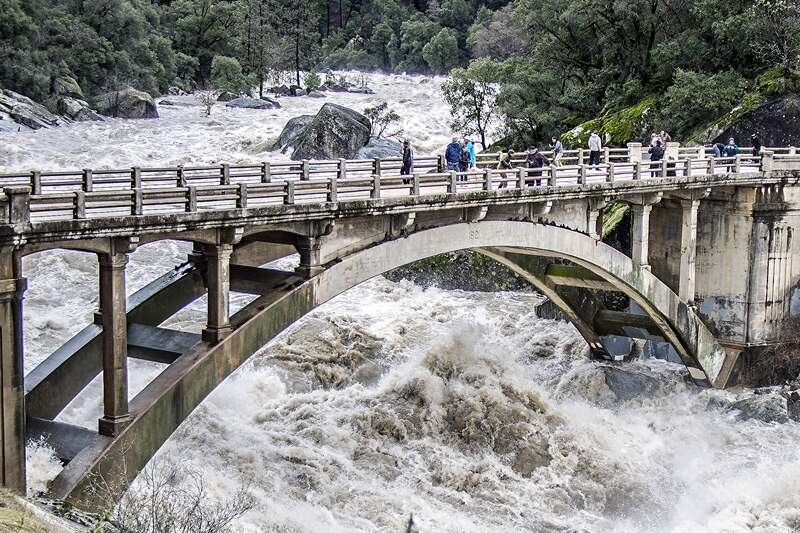
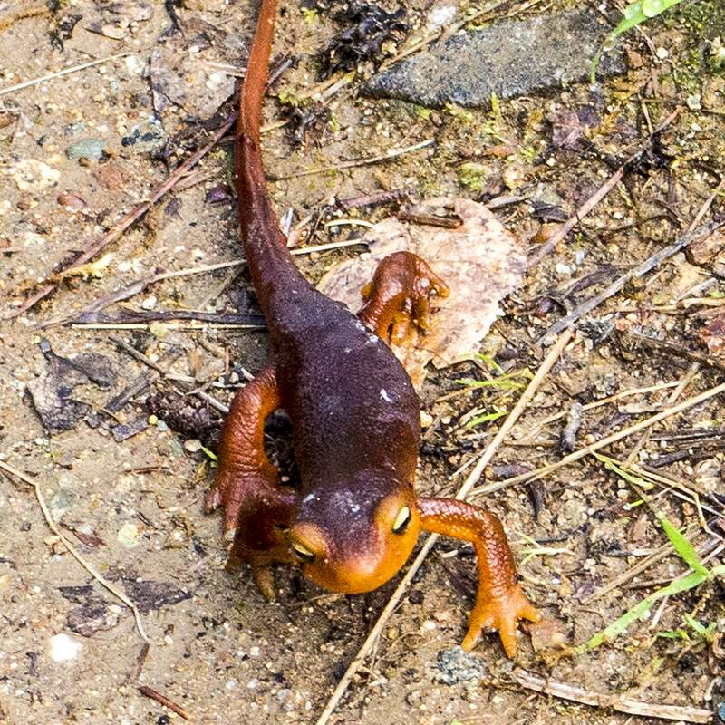

About the data
Creek Watch puts three kinds of information side by side, so anyone can see how Wolf Creek and Deer Creek are doing, and why.
Bridgeport Covered Bridge, South Yuba River. Photo: Frank Schulenburg, CC BY-SA 4.0, cropped and darkened.
Where the numbers come from
- Citizen reports come from people like you, sent from the Report page with a photo. They record water color, flow, algae, trash, smell and dead fish.
- Stream gauges come from the U.S. Geological Survey (USGS), which measures how much water is flowing (cubic feet per second) and how high it is. The Deer Creek gauge is about 22 km downstream of Nevada City. Wolf Creek has no live gauge, so we show the Bear River gauge far downstream as background only.
- Temperature and forecast come from the National Weather Service (NWS), at the Nevada County Air Park station.
- Rain in the last and next 24 hours comes from Open-Meteo. These are weather-model estimates, not a rain gauge in town. Data licensed under CC BY 4.0.
- Volunteer water tests (dissolved oxygen, pH, water temperature, cloudiness and, where tested, E. coli) come from local monitoring groups, published on RiverDB: South Yuba River Citizens League (SYRCL), Sierra Streams Institute and Wolf Creek Community Alliance. The data belongs to these groups, and every reading on Creek Watch names who took it. Deer Creek tests are recent (weeks old). The newest published Wolf Creek tests are from 2019, so they are shown as background only.
- Yuba River flow and Englebright Lake come from the California Department of Water Resources (CDEC): hourly readings for the South Yuba at Jones Bar and the lake’s storage and level. They’re shown on the Deer Creek card as regional context, with the time of each reading (CDEC can lag 2–12 hours), and aren’t part of any score.
- Past bacteria study: Wolf Creek’s 2024 E. coli sampling by the Central Valley Regional Water Quality Control Board, via CEDEN. It’s shown as dated history on the Wolf Creek card, compared with the state’s bacteria objectives, never as today’s conditions.
- Swim-hole bacteria tests on the South and Middle Yuba (Purdon, Edwards, Hwy 49, Bridgeport, Oregon Creek) come from South Yuba River Citizens League volunteers via RiverDB. They’re summer samples, shown on the map with their test date, not live readings.
- Creek lines and spots come from OpenStreetMap contributors (ODbL).
How the creek score works
Each creek starts at 100. Recent reports and conditions can move the score down. Every change is listed on the Creeks page with a plain-language reason, so the score is never a black box.
- ✓ Good (80–100): looking healthy.
- ~ Fair (60–79): mostly fine, with a few things to watch.
- ! Watch (40–59): an early warning, for example heavy rain plus muddy-water reports (runoff), or lots of algae in hot weather (a possible algal bloom).
- ✕ Alert (0–39): dead fish, or a sewage or chemical smell, in the last 3 days. Avoid contact with the water and tell the city or county.
Early warnings can push a creek into Watch or Alert even when its other numbers look fine. Heavy rain in the forecast shows as an advisory. Each creek also shows how confident the score is: low with no reports this week, medium with a few, and high with six or more.

Limits
Creek Watch is not a lab test and can’t tell you whether the water is safe to drink or swim in. Reports are what people see and smell, and those can differ from person to person. Gauges can be miles from where you’re standing. Treat a Watch or Alert as a reason to look closer, not as proof. Volunteer water tests are taken monthly at best, and nothing here tests for toxins. Air temperature stands in for water temperature. Fall flows are naturally low on these foothill creeks, and upstream dams shape what the gauges see. The weights are written-down judgment calls, not fitted to data, and we’d welcome a local biologist’s help tuning them.
Conditions at any spot can come from anywhere upstream. They don’t reflect on the landowner, and may be outside the landowner’s power to fix.
Some volunteer water-test sites are on private land, monitored by the Wolf Creek Community Alliance with the landowner’s permission. They’re not open to visitors: please view their data here only. The map’s report spots are the places to visit.
Privacy
- Photos have their hidden location data (EXIF) removed before they are stored. Your phone shrinks the photo first, and our server strips it again.
- Your name is optional. We don’t ask for an email address.
- We save only the location you send with a report. The public map shows it rounded to about 100 m (3 decimal places), never your exact spot.
One Health

Creek health, wildlife health and human health are connected. The same runoff that clouds the water can harm fish and insects, and the same algae bloom that kills fish can sicken a dog or a child who wades in. Watching the creek together is a way to look after all three.
Photo credits
The river photos are of the South Yuba River, a few miles north of Nevada City (Deer Creek flows into the Yuba too, below Lake Wildwood). All photos come from Wikimedia Commons. Edited versions of CC BY-SA photos are shared under the same licence.
- Purdon Crossing canyon (Creeks banner) and the canyon above the Report page: U.S. Bureau of Land Management, California, 1, 2. Public domain.
- Bridgeport Covered Bridge: Frank Schulenburg, Wikimedia Commons, CC BY-SA 4.0. Cropped, resized and darkened.
- Old Highway 49 bridge in high water: Larry Miller, Wikimedia Commons, CC BY-SA 2.0. Cropped and resized.
- Sierra newt: Larry Miller, Wikimedia Commons, CC BY-SA 2.0. Cropped and resized.
Built for the IEEE OneAquaHealth Global Hackathon 2026. Open source (MIT). Version